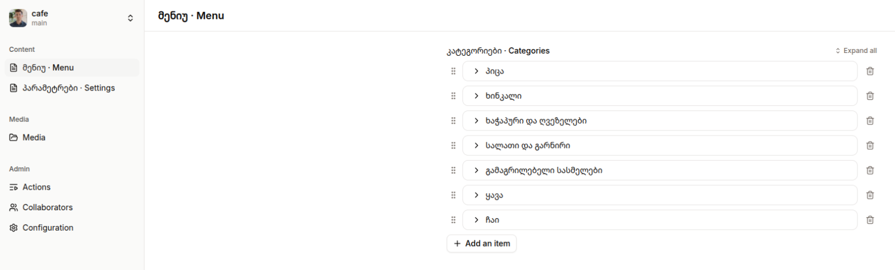
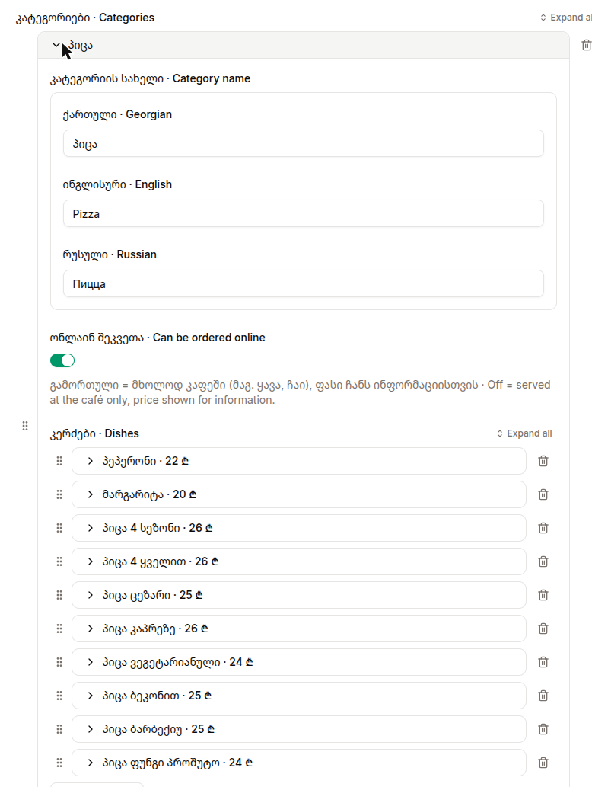
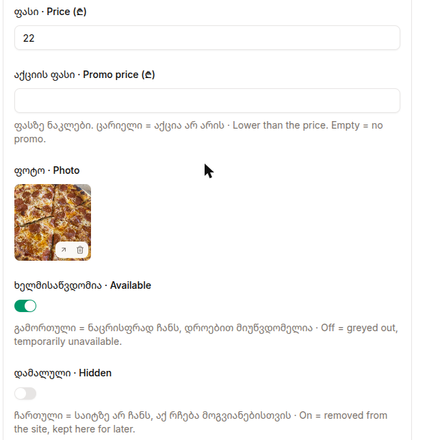
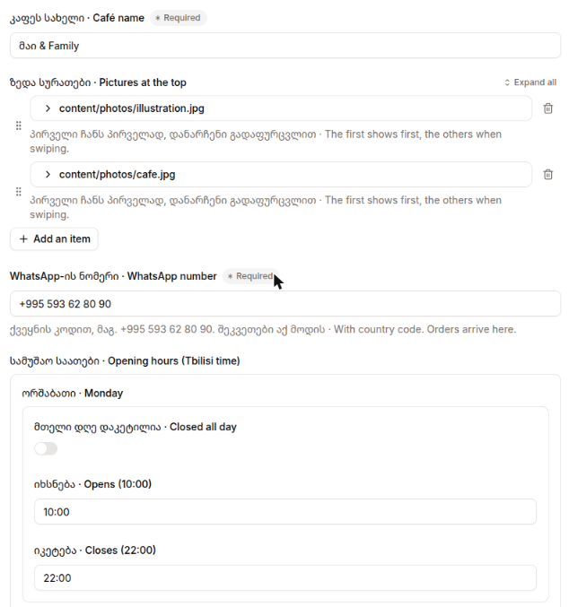
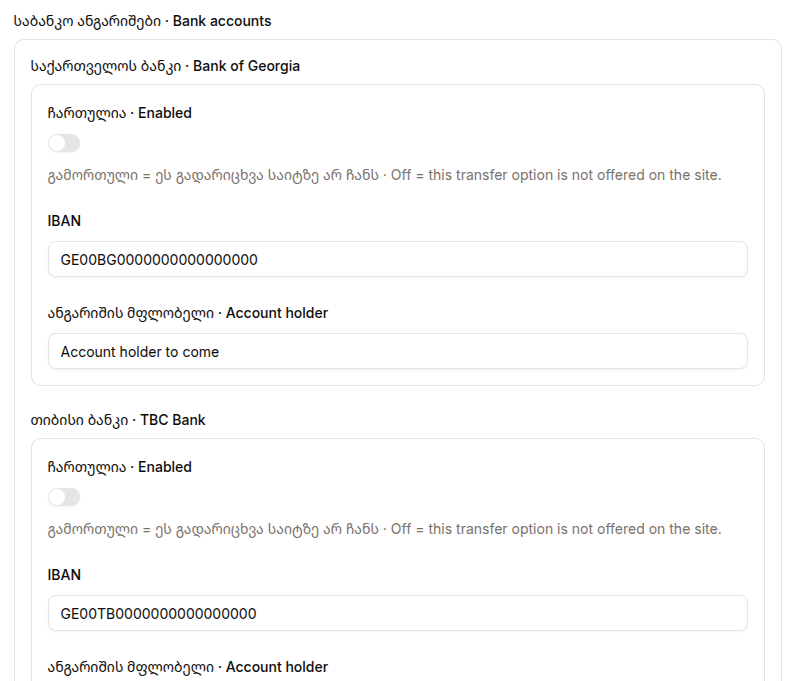

Website management guide
| Website | https://frossigneux.github.io/cafe/ (once a domain is connected: https://) |
|---|---|
| Editing | https://app.pagescms.org |
| Code and data | https://github.com/frossigneux/cafe |
| WhatsApp (orders) | +995 593 62 80 90 |
| Version | 2026-11-09 |
Parts 1–6 are for the café staff, parts 7–9 for a technician taking over the site. Georgian version: guide-ka.pdf.
content/menu.json, content/settings.json and content/photos/.| Service | What for | Owner |
|---|---|---|
| GitHub | Code, data, publishing | frossigneux |
| Pages CMS | Editing the menu and settings | Via GitHub or email invite |
| Worldbus.ge | Domain name (.ge) | |
| Google Business | Google Maps and Search listing | |
| Café page |
open app.pagescms.org, click Sign in with GitHub. The first time, allow the Pages CMS app on the frossigneux/cafe repository (it can be limited to that one). Open the cafe project: the left bar shows Menu, Settings and Media.
the owner goes to Admin → Collaborators → Invite a collaborator and enters their email. They receive a sign-in link by email; no password is needed. Afterwards they sign in at app.pagescms.org with the same email.



22 or 3.5.

Static site built with Astro 6 (Node 22), no server and no database. On every push to main, .github/workflows/deploy.yml builds it and publishes to GitHub Pages. Repository: github.com/frossigneux/cafe.
| Path | Role |
|---|---|
content/menu.json, content/settings.json | All café data. Validated at build time (src/data/*.ts); a mistake fails the build with a readable message. |
content/photos/ | Dish and gallery photos, referenced as /photos/x.jpg. |
.pages.yml | Pages CMS form definition (bilingual labels). |
content/README.md | How to edit the JSON directly on GitHub. |
src/i18n.ts | Interface texts in ka / en / ru, and the WhatsApp message wording. |
src/components/OrderPage.astro, src/scripts/order.ts, src/styles/global.css | Page, cart and WhatsApp logic, styles. |
scripts/make-og.py | Builds public/og.jpg (social image) in CI from the name and first gallery picture. |
docs/guide/ | This guide (HTML, PDF, screenshots). |
DESIGN.md, PRODUCT.md | Design system and product decisions. |
git clone git@github.com:frossigneux/cafe.git && cd cafe npm ci npm run dev # http://localhost:4321 npm run build # same check as the publish workflow
Always git pull first: staff edits in Pages CMS are commits on main.
.pages.yml. Any new JSON key must be added there too, or it will be dropped on the next save."" or null; the loaders treat them as absent..pages.yml, open the form and check the change. If Pages CMS still shows the old form, push another small change to .pages.yml (a comment): it refreshes its cached copy on GitHub's push notification.ns1.worldbus.ge / ns2.worldbus.ge), create:
@ A 185.199.108.153 @ A 185.199.109.153 @ A 185.199.110.153 @ A 185.199.111.153 www CNAME frossigneux.github.io.
CNAME file is needed with the Actions deployment./cafe/ prefix disappears by itself.Alternative hosting (private repository, Cloudflare Pages) is described in the repository README.md.
CafeOrCoffeeShop: name, address, coordinates, hours, Facebook) that helps Google match the listing.